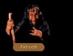

| DARKMOOR BARN |
|
The barn door was closed. The door was either stuck, or someone had blocked it closed from the inside. Though he suspected there was someone inside, no amount of coaxing make them betray their presence.
|
The barn door was closed tight. "You in there," called James. "We wish to speak with you. Ivan Skaald sent us!" There were rumblings from inside the barn, and after a few moments the door began to swing slowly open. |
| ULAM'S HOUSE (Chapters 1-3) |
James knocked on the door.After a few moments, a dough faced woman answered, keeping one arm braced behind the door in case her visitors were less than congenial.
"What is it you want?" Although she clearly was addressing James, her gaze danced nervously to the moredhel. "I've had enough runins with strangers of late."
"Were we looking to get a bit of water per...," James started, but found the old woman had slammed the door...
| ULAM'S HOUSE (CHAPTER 6) |
Meet: GRAN PETRUMH
| MALAC'S CROSS AREA |
Enter: MALAC'S CROSS
| PLAGUE HOUSE BARN |
The barn was musty and dark.Searching with straining eyes and groping hands, Owyn suddenly called out. "Over here. I think I've found something."
Halfway up one wall of the structure, a small "x" had been scratched into the wood, and just below this spot there was a raised area of dirt. Together they began to dig, and several feet below the surface uncovered a rotting wooden box. Inside were twelve silver royals in a small leather pouch.
| PLAGUE HOUSE |
There was a black ribbon hanging on the door.James took a step back and scowled, staring at the ribbon as though he was trying to decide on the proper course of action.
GORATH: Why do you look at the house that way? What does the black ribbon mean?
JAMES: The ribbon is a sign of The Sickness -- it's essentially a warning signal to others to keep away, and yet, it seems someone has recently gone through this house...looking for something, perhaps...
GORATH: Should we go in and have a look around?
| YES | NO |
|
There was the smell of death in the air. Entering the house it became obvious that someone had indeed conducted a fairly thorough search. Seeing nothing of interest James turned to leave. "Come on, let's get out of here. It maybe too late al--" He stopped in mid sentence as his eyes fell on a discolored floorboard in the corner of the room. Crossing the small house in three giant strides he carefully used the tip of his sword to pry the board up, then he slipped his fingers under and gave it several hard tugs. The board came free with a splintering "crack." James slowly reached down into the dark rectangular hole and excitedly pulled out a small bag. Spilling the shiny contents of the bag on the floor, he began to count... "Thirty four gold sovereigns!" he said. Probably the life savings of the unfortunate family that lived here. We will have need of this money, but I'll be sure to give a charitable donation of equal size to Father Tully should we ever see Krondor again. Now, let's get out of here. We may be paying for this small windfall with our lives." |
JAMES:
No. Its too dangerous. Besides, we have more important things to do.
|
| EXIT: PLAGUE HOUSE |
No one wished to speak about it.Seeing the glazed looks in each other's eyes and sickly pallor each had begun to exhibit, it was more than obvious they had fallen prey to a virulent plague. Silently, James hoped they would reach a temple soon before they all died of it.
| DRAGON STATUE |
| ENTER | EXIT (invalid?) |
|
James squinted. While he was expecting to see the spires of some distant town or the smoke of a chandler's hearth fire at the twist of the road, he was surprised to see instead a greyish lump settled near a clump of young trees. "Have you ever heard of a grey dragon, Owyn?" James asked. Owyn shook his head. "No, why?" "Because that's what may be at the end of this road," James replied. "Feeling brave? We can go and have a closer look." |
They left the statue. After a few minutes of walking, they found themselves back on the King's Highway.
|
Chiseled from dark stone, the statue of the dragon was rendered with frightful realism, its burning gaze surely as malicious in stone as it had been in life. Most impressive of all were the yellowed teeth and claws, stained cleverly at the tips with a red pigment to simulate the blood drawn from an unfortunate victim.
James wiped dirt from the statue.Although he had seen samples of the ancient Kingdom tongue, he still had great difficulty reading the old inscription: Heire, in the yar third of the reign of Delong the Greate in Mortale Combyte slew Malac the Pious the Flamewyrm Rhandra, and from that Terrible Beast forthwith tooke tooth and claw that it lay dead and troubled the land no more.
The statue was large.Walking around its base, Gorath couldn't help but admire the sinuous curve of the dragon's back, the whole of it covered with beveled scales. Rounding the tail of the creature, he called for Owyn to come and have a look, but was startled by the clouded apprehension in the boy's blue eyes.
"Something is wrong?" Gorath asked.
Owyn gasped, as if to say something, then made a motion to the statue before collapsing to the ground...
| SETHANON AREA |
| WEST: Exit to Zone 2 (Eggley) or Zone 7 (Dimwood) |
Mist floated in the pass."This road leads to Krondor and the west," Locklear said, "though I believe it also forks to the north and leads through the Dimwood forest. Which way do you think would be best?"
| WEST | NORTH | CANCEL |
|
The trip was dull. With only the occasional cold draft to chill their bones as they moved through the pass, it was a relief to finally feel the more temperate winds typical to the southern coastal reaches of the Kingdom. |
They moved north. For days they moved in mist, the moisture soaking into their clothes by day and chilling them by night. When at last the mountains sloped downward, the fog lifted and they found themselves standing at the edge of a great wood. |
They turned back. In a few moments they were back on the main road. |
| SETHANON - RUINS |
| ENTER | EXIT (invalid?) |
|
The road before them was strange. Though Owyn wasnt sure what unnerved him about it, there was something sinister about the whole area and he wasn't too sure he wanted to follow the dusty road they were on much further. "Sethanon ahead," he said. "Should we continue on and take a look around?" |
They bid Sethanon farewell. After half an hour's journey, they had returned once more to the main road. |
As much a fixture in the myths and legends of Midkemia as the stories of the gods told by priests in the Temples, Sethanon was nothing more now than a sad old ghost town. In passing a low brick wall which had been overgrown with ivy, they were struck by the words that had been painted there in sheep's blood: REMEMBER US.
Owyn stared into the crevice. Standing on the rubble of Sethanon's ancestral keep, he was shaken by the sight of the thousands of moredhel bones which had been used to fill the gap into the undergrounds. However interested he was in finding out what lay below, he had no desire to burrow through the moldering bodies.
Rubble littered the ground. Moving closer, Owyn tried to see what was between the cracks of the fallen stone, but was unable to tell more simply by looking.
Curiosity got the best of him. Dropping to his hands and knees, Owyn began pulling the rocks aside in hopes of finding something of interest...
| COVEY'S HOUSE (first) | COVEY'S HOUSE (second) |
|
The owner of the small house, a farmer who called himself "Covey," invited them inside. They talked for several minutes about a variety of topics, while Covey's wife grabbed something they could take with them when they left. "Could we get you strapping lads something to eat?" she asked. YES: With a smile, the farmer motioned to his wife. He moved next to her and helped prepare the rations. When they were through they handed several packages to Locklear who accepted them graciously. "You have been too kind," he said. NO: "Very well then," the farmer said, showing them to the door. "Perhaps next time." |
They were greeted warmly. After a friendly chat and a swig of ale, they refused any further hospitality from their host. "You've been more than generous," Locklear said, grabbing his pack. "I think it's time we made for the road again." |
| COVEY'S BARN |
| Staring into the barn, Owyn thought he could make out the forms of a cow and several small sheep. He also thought he heard chickens, though he wasn't exactly sure where the sound was coming from. In any event, the chickens made him think of fresh eggs, and the cow: fresh milk. His mouth began to water. "Perhaps whoever owns the house over there could give us something to eat," he said. | Staring into the barn, Owyn thought he could make out the forms of a cow and several small sheep. He also thought he heard chickens, though he wasn't sure exactly where the sound was coming from. It made him think of Covey's kind offer. "Come on. We should be going," Locklear said. |
Owyn was about to leave when he noticed a small sign hanging from a rusty nail in the door.
The sign read: NIA'S SHOP - CLOSED FOR NOW.
"That's a strange thing to put on a sign," said James with a puzzled look.
Less than a minute later, Nia hurried over from the Six Toe with a large set of keys jangling
on a brass ring in her hand.
"I'll have that door open for you in a snap," she said as she began to search for the proper
key. "Ah. Here it is..." She inserted the key into the lock, jiggled it a few times until it
clicked, and pushed open the door.
Less than a minute later, Nia hurried over from the Six Toe with a large set of keys jangling
on a brass ring in her hand.
"I'll have that door open for you in a jiffy," she said as she began to search for the proper
key. "Ah. Here we go..." She inserted the key into the lock, jiggled it a few times until it
clicked, then she pushed open the door.
Owyn entered the small house and looked around. Judging by the simplicity of the things which
decorated the interior, he guessed the house belonged to Max Feeber. "This is odd" he said,
noticing a few items which seemed a bit more expensive than a farmer might be expected to own.
Alerted by the incongruity, something told him to investigate the farmer's belongings
further...
For a long moment he leaned against the door frame as he waited, positioning himself so he could
listen for the sounds of any stirrings inside. When at last it was evident no one was coming, he
stepped back with a shrug.
"Doesn't seem that anyone's about," Owyn said.
After several seconds a large man greeted them, introducing himself as "Hershel".
He invited them inside and offered them some food and cold ale. They discovered, while eating
that Hershel's house was an old relay station, and he regaled them with stories about it until
they were finished with their meals and ready to leave.
"What were you lookin' for behind my house a week or so back?"
James looked surprised. "I have done no such thing," he said defensively. "Perhaps you have
mistaken me for someone else."
"No matter, I suppose," the man grumbled, his look lacking conviction. Escorting them to the
door, he shrugged his shoulder. "I got some other things to do, so if you'll excuse me. And
don't be wandering around on Hershel's land again, hear..."
"Back again, eh?" he said, slapping James on the shoulder. "Now I know that somethin' around here
has you mighty interested, cause I know what I saw with my own two eyes. You been around here
before looking for something out behind the house here. What you looking for, boy?"
"I insist I have not been looking for anything around here other than an answer to who this
person is that you think I look like," James said, numbed that he had actually gotten the phrase
out of his mouth.
Running a hand across his bald pate, the man made an indeterminate sound. "Don't know, don't care.
Now just leave me be, okay?"
Not wanting to start an argument with the stranger, James allowed for them to be escorted out of
the door...
Turning to Owyn, Locklear said, "Shall we dig up this grave?"
Covered with grime and grave mold, Locklear distastefully flung back the heavy lid of the coffin
to look at its contents. Immediately he retched as a thick ammonia scent billowed up from the
coffin's corrupting remains...
"Just a body," Locklear gagged. "Let's get him covered back up."
"No good," he said. "We can't dig it up without a shovel. We'd ruin our swords trying."
Covered with grime and grave mold, James distastefully flung back the heavy lid of the coffin
to look at its contents. Immediately he retched as a thick ammonia scent billowed up from the
coffin's corrupting remains...
"Just a body," James gagged. "Let's get him covered back up."
"Wait," Owyn said, pointing down into the hole. "Look. Someone's taken his hand. Why would a
grave robber steal a body part?"
James shrugged. "I wouldn't have guessed I would be digging up graves myself if Gorath hadn't
said that the moredhel use them sometimes as secret caches. Either way, let's get him covered
up and be on our way."
Using his hands to push away the soft, unpacked earth, he wiped perspiration from his forehead
with the back of his sleeve and stepped out of the hole he had just created.
He motioned for someone to bring him the hand as he carefully pried open the pine lid of the
decaying box. Then, without looking inside, he dropped the hand and quickly closed the lid,
part of it crumbling in his fingers.
"Rest in peace now, Jared," whispered James. "Come on, let's fill in the grave and get out of
here."
"We know the moredhel haven't defiled this grave," he said. "Let's leave poor old Jared at rest
now, shall we?"
Stepping up to take a closer look Owyn suddenly felt a powerful surge of energy enter his body.
He jumped back in pain.
"Obviously," Owyn said, rubbing his stinging shoulder, "somebody doesn't want us to get too
close to this well. Perhaps we should go talk to whoever lives in that house over there."
"Nope, just a regular hunting knife."
The figure of a small elderly man followed the disembodied voice around the edge of the house.
"I was out back tending to some chores. You're right about the symbols being magic though.
Carved 'em there myself. Name's Flarr Wygn."
Thrilled to be in the presence of another magician, Owyn smiled and said, "It would've been
easier to do it magically, Flarr."
"I suspect you're right about that. But I'm not a magician. No, it was my brother who had the
gift. Died a couple years back." The old man stared solemnly at the door for a moment, then
suddenly cheerful said, "Left behind a magic well. His legacy. Its guarded by a pretty nasty
spell -- give you a good jolt unless I turn it off. You head on over to the well and I'll give
you a drink. It'll fix you right up and set you back only 25 sovereigns."
Flarr leaned in closer. "Feels pretty good, don't it? You'll be right as rain in no time. Thanks
for your patronage, boys."
With a wave of his gnarled hand he headed back to his house.
Turning around he hobbled back toward his house.
"Hello?" Silence. "Is anybody there? We are weary travelers and seek only a moment of your time,
and perhaps a drink of water." Locklear waited patiently for a moment, then said sternly, "Look,
we know you're in there. We heard you moving about."
Finally, with the door still closed, a man replied weakly, "We know who you really are. We will
have the rest of the taxes as soon as we get the money."
No amount of arguing or explaining could convince the man of the truth. The door remained closed.
"Good day," said a lady of about twenty five. "What brings you kind gentlemen to Lyton?"
Locklear glanced at Owyn, then replied matter-of-factly, "Just passing through. Could we
trouble you for something to drink perhaps?"
"You'll find a well beside the road near the center of town," she said.
Realizing that she was probably a bit leery about talking to strange men, Locklear thanked her
for the information and said goodbye.
After a friendly chat and a steaming pot of tea, they refused any further hospitality from
the host. "You've been more than generous," Locklear said, grabbing his pack. "But I think it's
time we made for the road again."
"What in the name of Ishap?" - Gorath stood with his ear cocked to the door. Suddenly
realization dawned, and with a smile he turned to leave.
Owyn gave him a puzzled look. "We're leaving? It sounds like a wild beast in there, perhaps we
should see if there's anyone inside in need of our assistance."
"I'm afraid even if you were a master magician like Pug you couldn't cure a snore like that.
Come on, let's allow him sleep."
He poked around for a few minutes, then said, "Nothing of much interest here. Let's move on."
Smiling at them, the man eagerly accepted the offer of fellowship and told a
number of tales about his works for Lord Lyton. Unsure what in the man's manner
inspired his trust, James responded likewise by telling him a few of the details
of their trip to Romney, though omitting the specifics about Gorath's part in
things.
"Ah we! I don't envy you that," the man said, waving his hands. "I'd not be
heading anywhere near the river, not for no amount of silver. Not me."
"Why is that?" James asked.
"Awful troubles there. The Guild of the Romney and the Riverpullers Guild are as
good as at war. If you ask me, some bloke down Silden way is trying to stir up
things. I've heard he's even got a few sneaks what are posing as members of
other guilds, even carrying forged guild seals. Saw a group of them with Max
Feeber, that greedy bastard out west of here."
When the man excused himself to go answer nature's call, James pondered for a
moment the things he had learned. While it seemed wildly improbable that the
events that were going on around them were somehow connected, he had seen the
plots of Murmandamus previous to the last uprising and those circumstances had
left him jaded. It made him none the more comfortable that he was now escorting
a former ally of that moredhel monster.
"That sounds like quite a funny story," James said. "Would you care to repeat it?" The man
looked about nervously, "Uh, no... I..."
"Please," said James with as warm a smile as he could muster, understanding why the man might
be nervous.
"Well, okay. I was just tellin' the fellas about old Glover. Paid 300 sovereigns
for a dead man's hand - thought it was a 'glory hand' or something like that... figured he
could sell it for big money, I guess."
James thanked the man for his information and his time.
"YOU!" he shouted, pointing at James. "That hand you sold me was totally WORTHLESS! It wasn't a
glory hand at all!"
James took a step back. "I'm afraid you have mistaken me for someone else, I really have no idea
what you are talking about. But did you say something about a hand? We'll buy it back from you."
"I tossed that worthless thing into the dried up well at Lyton. 150 sovereigns! That's how much
I paid for it. You telling me you'll give me my money back if I retrieve it for you?"
The man looked at them suspiciously, threatened to have them strung up if they weren't around
when he returned, then left... Several hours later he returned with a small burlap bag. Placing
it on the table with a thunk, he turned to James. "Here's your hand, now give me back my gold."
"I didn't take your gold, so let's call this a 'sale,' shall we?" said James.
"Call it whatever you like - where's my bloody money?" the man bellowed.
James retrieved the money from his pouch and dropped it on the table. The man scooped it up
greedily and demanded they stay until he had a chance to count it all...
The man's face turned bright red, "I knew it! You have deceived me for the last time, you
scoundrel!"
He began a frantic scramble for his weapon, which, they decided, seemed like a very good time
to make a hasty exit.
"I knew it!" screamed the man, interrupting. "You have deceived me for the last time, you
scoundrel!"
He began a frantic scramble for his weapon, which, they decided, seemed like a very good time
to make a hasty exit.
"May we speak to the lord of the manor?" James asked.
The servant shook his head. "I am sorry, he is sleeping. You will have to come back in the
morning."
"Go away! Lord Lyton is very busy meeting with a reeve sent from Earl Presser, and he doesn't
wish to be disturbed at the moment."
They argued with the voice behind the door for several minutes, then, recognizing the futility
of further discussion, left.
She ushered them inside and led them to a partitioned corner of the room. Pulling back the
curtain, she revealed a gangly man with a white beard and snow grey hair who introduced himself
as Lord Lyton.
"Please forgive my humble accommodations," he sighed. "My financial situation has been
compromised by the death of my lord, Earl Presser of Romney." Suddenly, he brightened, "Perhaps
you fine gentlemen would be willing to assist me in a small matter..."
"What could we do to help you?" asked James.
The lord sighed again, "I was to equip six knights and send them to Romney for my former lord,
but his holdings were bestowed on his half-brother following his death, and he wishes me to
deliver 12 fully equipped knights to Malac's Cross."
"If you could bring me 6 suits of kingdom armor, in good condition, I would be able to get rid
of those annoying tax collectors who have been travelling the roads terrorizing people and
extorting money. I wouldn't actually expect that you would have that sort of a thing with you.
You don't, do you?"
James made a face. "It isn't exactly the sort of thing we would carry about with us as a rule."
"Of course not," Lyton replied, showing them to the door. "But please, see what you can do."
"Have you brought the armor I requested?" he asked excitedly.
James nodded in reply, but before he could say more, Lord Lyton was on his feet. "Wonderful!"
exclaimed the lord with a huge smile. "I don't know how you did it, but all I can say is
thank you!"
"Glad we could help," said James nobly.
The lord began to rummage through some of his belongings in a cedar chest in the corner of his
house. "Let's see, what do I have here that I could offer as a reward."
"That won't be necess--"
"NONSENSE!" he snapped. "I want to help out. Ah, here we go. These things aren't much, but you
may find them useful." He placed a virtue key and a parchment note on the table. They thanked
the man, took the items from the table and placed them in their packs.
"You haven't brought the armor I requested, have you?"
James shook his head.
"I need 6 suits of standard armor or I'm ruined! Please don't return without them!" They were
quickly ushered out of the house.
"You shall not pass this way unless you pay a road tax," yelled one of the men.
James put a hand on his sword, "Under whose authority do you make these demands?" he shouted
back.
"Lord Lyton. Now either turn back or pay us a tax of 25 gold sovereigns. Which will it be?"
James gritted his teeth in anger as he carried the pouch of gold coins to the men standing before
him. He dropped it noisily at their feet, making sure his hand was high enough in the air for it
to make quite a noise.
"Lord Lyton thanks you," he said.
"We thank you," laughed the others. "Okay, you may pass."
"I'm sorry," he shouted. "We don't appear to have the money."
"Well, don't bother returning ," replied one of the men in a loud voice. "Not until you have
it. Now get out of here before we take it out of your hides."
Turning to Gorath he said quietly, "A battle against these men would be foolish. We should turn
back and find another way around this mess."
Withdrawing strange packs from their tunics, they pelted James and
Owyn with globs of material that smelled terribly. Confused at first,
James examined the material, then realized what was happening.
"It's a Quegian battle tactic!" James shouted. "They're throwing
disease infected mulch! We've got to take them down!"
With a puzzled look on his face he turned to Gorath.
JAMES:
"There are some men up ahead, and judging by their strides I'd say they were guarding something.
Perhaps we should avoid this area until we can find out what they are up to."
Ahead of them, a mercenary took a last swill from a bottle of alcohol
before throwing it aside. "We've got us a nice arrangement here," he
said. "Me and the innkeeper at the River Pilot's Folly. Too bad you've
decided to muck about with me. You'll be sorry you crossed swords with
Crenard!"
Stumbling across the stony ground, half drunk on wine, he fumbled for
his weapon. "You'll be sorry the day you crossed Crenard," he spat as
James advanced on him.
Having heard their clumsy advance, he took a last swill from a bottle
of alcohol before throwing it aside. "We've got us a nice arrangement
here," he said. "Me and the innkeeper at the River Pilot's Folly. Too
bad you've decided to muck about with me. You'll be sorry you crossed
swords with Crenard!"
"Welcome, gents! It's going to be dark pretty soon, you should think about spending the night.
Dangerous out there!"
"Dangerous?" questioned Locklear. "Why is that?"
The innkeeper leaned forward and whispered, "The dead have taken up refuge in these parts.
They stalk the roads by night and have been attacking travelers. If I was you, I'd think
about staying here tonight, and getting an early start in the morning.."
James offered the man a seat. "What can you tell us of the area?" he asked.
"You won't be wanting to travel by night, sirs. Rusalki roam the hills lookin' for weary
travelers to prey upon. And truth be known?" he lowered his voice to a whisper. "I think
the innkeeper has somethin' to do with it."
"What makes you think that?" James said with a tilt of his head.
The man looked around, "People say he knew where the Rusalki were hemmed in during the day,
and that he hired a fella named Crenard and a few of his companions to protect it!"
Head still atilt, James asked, "Why would he want to do that?"
"To protect his livelihood, o' course! Folks was scared to sleep outdoors, so they would stay
at his inn - he was makin' a pile of the shiny stuff, he was."
"Good day to you, sirs! My name is Buck Rausch. And who might you be?"
Locklear made the appropriate introductions and the man smiled at them warmly. Then he
said, "The river has been fruitful this season. Could I interest you fine gents in some dried
trout? Or perhaps you'd like to buy one of my handmade shovels -- or maybe a torch?"
"Have you brought the Chief Reeve's dinner?" he asked, evidently viewing their arrival as part
of a regular schedule. When James wasn't quick to respond, the man seemed to get a bit irritated.
"Are you or aren't you the delivery men from the goods store?"
"Yes," James quickly lied, seeing it as an obvious way to get past the guard. "We'll just go on
in and deliver his dinner to him..."
The man frowned. "Obviously they didn't explain to you the way things work round here. No one
comes past Podrich," he said, thumping his chest. "You go over next to the field and put the
goods in the box, then go about your way. Now do you or don't you have his food?"
"So, what do we do now?" Gorath asked.
"Go to the tavern and wait," James replied. "We come back tomorrow and, with any luck, Arlie will
be willing to see us. A little food will often get a man into a talkative mood. Let's hope the
Chief Reeve is no exception."
"So, what do we do now?" Gorath asked.
"Wait," James replied. "We come back tomorrow and, with any luck, Arlie will be willing to see us.
Of course, he may not be too happy with our leaving him bad food, but at least it may get us in
to see him."
"And what if he decides to kill us for our little stunt?" Gorath replied.
James shrugged. "We will deal with it when we have to. Now let's get comfortable somewhere."
CHEST RE-OPENED:
James waved Gorath off.
"They are bound to be watching us from the house," James said. "If we tamper with the box too
much, they're going to get suspicious. Now let's get out of here until tomorrow."
"If you had pulled that stunt with me, I'd have your livers for breakfast," he said, referring
to their having previously left the tainted rations. "The Reeve is a little more forgiving.
He says anybody what had the manhood to try that deserved at least a meeting with him. I'll
deactivate the trap so as you can get through."
Owyn winced as the guard removed a scroll from his tunic and read the incantation, horribly
fumbling most of the words which were written upon it. Once before, he had seen a neophyte
spellcaster consumed in flames as he mispronounced a critical line of a spell, leaving forever
after a greasy spot on the streets of Tiburn. Much to his relief, the trap collapsed without
incident.
Nearly bald except for a few short tufts of hair which cropped behind his ears like untended
weeds, the Chief Reeve was a surprisingly small man for the position of power he held among the
Guilds of the Romney. Smiling fiercely at them, he slapped Owyn's shoulder with a heat
blistered hand.
"Arlie Steelsoul here," he said. "If nothing else, you've got chutzpah. Lucky I didn't eat the
stuff you dropped in the box without having it checked first. Learned a long time ago to be wary
of trusting people on the outside."
Nearly bald except for a few short tufts of hair which cropped behind his ears like untended
weeds, the Chief Reeve was a surprisingly small man for the position of power he held among the
Guilds of the Romney. Smiling fiercely at them, he slapped Owyn's shoulder with a heat
blistered hand.
"Arlie Steelsoul here," he said. "If nothing else, you've got chutzpah. Not many men see that
trap out there and have the gumption to try to come through it. I wanted to at least talk to
whomever had the guts and the smarts to pull it off."
Dabbing a sooty grime from his face with a towel, he seemed genuinely pleased to see them once
again.
James shook his head."The Duke of Romney doesn't seem too happy about matters either," he said.
"He wants you to come to the negotiations table so they can bring a halt to the violence in
Romney."
Arlie nodded. "Bloody politics started this mess and it looks like that's what it'll take to
bring it to an end. They'll take a chunk out of the Ironmonger's Guild, be sure of that. We've
always lost at the negotiations table."
"Then we can tell the Duke you will negotiate?" James asked.
Walking to a row of shelves, he pulled down a book. "Nothing else to do that I know of."
Alerting Gorath first, he tossed the tome. "Thought you might like this after all your questions
about the ironwork..."
"What is it?" Gorath asked, looking at the plain leather cover.
"A beginner's text on the art of repairing arms and armor. I was going to throw it out to make
room for a few new books that Podrich brought to me. You're welcome to it."
Thanking the Reeve for his generous offer, James motioned to Gorath it was time they were on
their way once again. "We will tell the Duke," he said before closing the door. "He will be
excited I think."
"I'm glad we got this chance to talk," he said. "Been a while since I've had a chance to gab
with anyone outside of Podrich."
"Maybe you shouldn't keep yourself locked up in a cage," James said. While you might be keeping
out potential enemies, you're also keeping out potential allies."
"Thought about that," he admitted. "It's just this whole mess with what's happening in Romney.
I'll take it under advisement. Either way, you lot will be welcome anytime you'd like to come
back and visit. Watch you don't get yourselves skinned!"
His raven hair dusted with grey and the lines around his eyes hard, he looked on them with
gravity, the weight of his stare deep and penetrating. "This is the house of Madame Haphra,"
he rasped. "Futures, speaking with the dead, rumors. We will require a payment of fifty gold.
Do you wish a session with Madame?"
"Do not question some of the things my wife may say or do," he said. "We have recently lost a
daughter and it has shaken Haphra's belief in some of her...abilities. Please, if she asks for
acceptance, no matter what she may have said, please treat her kindly."
Without another word, he shoved aside the curtain and allowed them into a rear room where
Madame Haphra waited. Seated at a table, she wore a woven brocade vest over a lightly dyed
peasant's blouse, and her hands and neck were ornamented with bright wooden beads.
"Please have a seat," she muttered, waving a brightly nailed hand at the rude chairs set
across from her. As she spoke, her eyelids fluttered, as if she were speaking through an
alcoholic haze. "I may provide three services for you. We may speak of local rumors, I may
tell thee the future, or I may speak to the dead. Which would you have of me?"
"No," the man replied. "Only gold. Come back when you have it."
"May then you sleep with the Rusalki," the man hissed in reply. "Be gone."
"Very well," she replied. "Bella shall show you out."
Startled with the ferocity with which the woman had bitten off the last word, James shrugged his
shoulders. "I had not heard anything of them..."
"Do not seek the Rusalki!" she continued, her voice still frantic. "They are of no harm to
anyone!"
Although he had remained quiet as Haphra had begun to rant, Bella moved forward and touched her
on the shoulder, seemingly relieving the wildness that was overcoming her. "These gentlemen are
friends," he said quietly. "You will not be injured."
Taking his hand, she nodded once, then looked back at James. "You will forgive me.
This has...touched our lives, but I can explain no further."
SEVEN FALSE PROPHECIES:
Owyn cringed as he found that the mystic was regarding him intensely, fixing him with a gaze
that looked frankly more familiar than he liked. "You shall discover wealth in a hidden place,
but shall lose something dearly won so that you may obtain it. In gaining it, you shall have
great joy, but later will find that it holds great misery for the time ahead."
Staring deep into Owyn's eyes, she hesitated a moment, then shook her head. "I can tell you
nothing you do not already know," she said, then locked gazes with Gorath. "But you, however, I see betrayal
in your future. You will turn on all that you have sworn oath to and will become something you
once hated. You will face your enemy most hated and he will change you."
For a long moment she sat silently, her gaze turned as much inwards as outwards, but at last she
spoke in a startlingly youthful voice. "A long shadow and a star stand over your house," she
said, addressing Locklear. "Even as you find the soul that is kin to your own and achieve all that you
had hoped, you will lose your closest friend to passion in a foreign land."
Regarding James, the look on her face slowly changed, turning into a mask of pain and regret. "You
will die a slow and painful death, alone and in starvation," she said somberly. Those upon whom
you thought you could count will abandon you in your hour of need and in death they will believe
you a disgrace to your station."
A puzzled look crossed Haphra's face as she attempted to concentrate.
"Yours is a fortune I have not seen the like of for some time. A dead man's key will open the
doors which cannot be seen and are hidden beneath those who bow below the seven rayed star."
Her eyes half-closed, she looked dreamily at James, licking her lips as she spoke. "When you are
driven on the longest road, you will seek to destroy the instrument of deception, but will find
need to deceive those who guard the way. In the very last place you will find that salvation is
with the man who seems a boy."
Shivering, as if seized with a sudden chill, she flicked a bony finger out at Owyn.
"You shall save one whom you admire from a dire fate, but shall awaken the attention of those
whom most wish for your destruction. Forever after, you shall find that you walk the paths of
the world nameless and alone."
"Haphra!" Bella shouted, but was shoved aside like a mere twig as the old woman lunged to her
feet, her eyes blazing fury. Raking James's face with her sharpened nails, she howled in a voice
that no longer sounded human. I am Haphra! You will believe! You will believe..."
Weeping openly, Bella moved behind his distraught wife, but rather than trying to console her,
he lifted a stick of fire wood and struck her to the floor. Standing over her unconscious form,
he seemed poised to strike again...
"Wha... ," Confused, James flashed a horrified stare at Bella, but suddenly drew back in shock as
another form began to materialize around Haphra's crumpled body, taking on the shape of a young
girl. For a moment it hovered, its expression glowering as it stared at Bella. Then, with a
hateful screech, it flashed through the air to pass through the walls of the house.
"Go after it," Bella sobbed, dropping to the ground to cradle his wife. Go and kill it. We are
finished with the rusalki now. Go!"
Nearly tripping over the clutter of the small house, they rushed outside and prepared their
weapons for the rusalki who now awaited to kill them all.
Next to the door, Haphra was sitting up, her frail fingers clutched in her hair and a distant
look on her face. As she regarded them, she looked more relieved than pained for her injury.
"She is dead?"
"Yes," James replied. "Dead. Or at least we may assume so. What exactly did we witness here?"
"A foolish old woman who didn't wish to let her daughter go," she said, her voice trembling.
Grabbing hold of Bella's hand for support, she continued on bravely. "After our daughter died,
I sought to find her with my talents. I thought if I could seize on to her, we could keep her
with us."
"But that's not what you found," James replied.
Haphra shook her head. "No it wasn't. Instead, I found the spirit of the rusalki who promised
that she would bring our daughter to us, if we would allow her to live through me, to inhabit
this body. For a while we believed her, but after several weeks...we knew we had been trapped
by the creature."
Feeling awkward in the woman's presence, James touched the woman's shoulder lightly. "I am very
sorry."
"Don't be," she said. "You have freed us of a curse and now we can begin to rebuild our lives
without my daughter. For this, I shall grant you a true prophecy, or at least one as
true as I am capable."
"What is his name?" James asked, intrigued by the answer.
"I do not know," the woman replied in shame, looking to the floor. "In truth, my powers are
quite limited. I have told you all that I can truly see."
"Enough," Bella said. "It is time you had some rest, Haphra."
Understanding that the man wished for them to leave, James nodded thankfully to the fortune teller
and her husband. "Good luck on your new life together," he said, closing the door behind them.
"I think you deserve it."
"What is his name?" Owyn asked, intrigued by the answer.
"I do not know," the woman replied in shame, looking to the floor. "In truth, my powers are
quite limited. I have told you all that I can truly see."
"Enough," Bella said. "It is time you had some rest, Haphra."
Understanding that the man wished for them to leave, Owyn nodded thankfully to the fortune teller
and her husband. "Good luck on your new life together," he said, closing the door behind them.
"I think you deserve it."
"Madame Haphra is too weary to attend you," he said, his narrowed eyes betraying a hint of
accusation. "Events of late have exhausted her and she will be resting for some time to come.
Goodbye gentlemen."
She came to the door holding a leatherbound book. Looking past her into the house Locklear could
see four or five children of various ages.
"I'm afraid you gentlemen are a little old for my classes," she said.
"Uh... Yes... Okay then, well, we won't disturb you any further. Goodbye, Miss."
After the door closed Locklear turned to Owyn and said, "Don't give me that look. Teachers
always make me nervous."
A moment later a large man appeared in the doorway, his sandy colored hair dancing around on his
head thanks to a gentle breeze.
"You fellas come about a house? No one builds 'em better!" he said proudly.
Locklear took a step back. "We were just admiring the fine job you did. Very nice work.
Unfortunately, we're just passing through."
They talked to the man for a few minutes, discovered there was a temple on the other side of town,
then left.
A tall, shadowy man appeared and ushered them into the house. "You come to buy something, yes?"
he asked through crooked yellow teeth.
"I guess that depends on what you're selling, friend," James replied. They followed the man to
a large wooden table. It was covered with about a dozen items, mostly junk, but one caught
James's eye. "Tell me about this piece. Where did you get this?" he asked, picking up a
broken medallion that looked as though it had been stepped on more than once.
The man eyed them nervously. "I found it around here somewhere. Would you like to buy it?"
He made a halfhearted sales pitch, then seemed almost relieved when his offer was rejected and
he was told they had to leave.
Turning to Owyn, James said, "Did you notice the Nighthawk emblem on that medallion? I would
say there definitely are -- or were -- Nighthawks in this area."
Suddenly, a scrawny ball of fur exploded out of the house, raking Gorath painfully across the
face.
"Damnation!" Locklear cried. "Cat must've been trapped in there for days!" He caught his breath,
then went over to check on Gorath's injury.
Pushing the door of the shop open, he was met by a sharp faced fellow who was carrying a wooden
keg. Quickly dumping it with a pile of other casks, he wiped his hands off on a towel, then
extended his hand.
"Harlan," he said. "I'm the brewmaster around here when I'm not hauling things about."
"And where exactly is here?" Locklear replied.
"This is the Upturned Keg. We're the best brewery this side of the Romney. Would you care to
sample some of our stock? We make a dandy apple wine," the proprietor said. "I can have some
decanted for you."
Refusing as politely as he knew how, Locklear shook his head. "We have to keep our heads about us,"
he said. We've a long road ahead and there's been some trouble around, or so I hear. We'll leave
you to get back to your business."
"Yes?" the brewer asked, his face smeared with a seedy looking grime.
"We just thought we would pop in for a visit," Locklear interjected. "If you weren't busy."
"Don't have the time," the man said, wagging his head. "I'm working on a new batch and it
needs constant attention. Sorry. Come back again some time."
"Yes?" the brewer asked, his face smeared with a seedy looking grime.
"We just thought we would drop in for a taste of your stock," James said. "If you weren't busy."
"Don't have the time," the man said, wagging his head. "I'm working on a new batch and it needs
constant attention. Sorry. Come back again some time."
Pushing the door of the shop open, he was met by a sharp faced fellow who was carrying a wooden
keg. Quickly dumping it with a pile of other casks, he wiped his hands off on a towel, then
extended his hand. "Welcome to the Upturned Keg. Best brewery this side of the Romney. Would you
care to sample some of our stock? We make a dandy apple wine..."
"I'm sure you do, but no thank you," James said. "We have other business with you. Have you
recently sent a special delivery to the Black Sheep Tavern in Romney?"
The man nodded. "Yes. A man here in town named Mitchel Waylander came in and made the purchase
order himself. Paid with rubies."
Recognizing the name of the leader of the Glazer's Guild of Romney, James arched an eyebrow.
"Was there anything unusual about the order?"
"I'll say," the man replied. Moving to a small bin, he pulled out a handful of a substance that
looked like tabac, letting it sift between his fingers back into the bin. "He asked that I add
this to the kegs - called black tarweed."
"A poison?" James asked.
"No. It's a cheat used by the less scrupulous tavern keepers. Handful of this dissolved in your
ale, and whoever drinks it will think they're dying of thirst. Gets worse the more you drink."
Gorath spat. "It is often done in the north," he said. "A man will drink until he is no longer
capable, either for lack of gold or wit."
"And an excellent way to make certain that someone is incapable of fighting you back," James
said with disgust. "The Nighthawks aren't what they used to be."
Alarmed, the brewmaster seemed to pale. "Nighthawks? What have they to do with this?"
Omitting most of the smaller details, James told what they had already learned of the murder.
Horrified, the man shook his head. "I assure you, this has never once happened in association
with the Keg. If you would like, I will get you something to drink. I guarantee that it has not
been laced with the black tarweed..."
"Yes?" the brewer asked, his face smeared with a seedy looking grime.
"We just thought we would drop in for a taste of your stock," James said. "If you weren't busy."
"Don't have the time," the man said, wagging his head. "I'm working on a new batch and it needs
constant attention. Sorry. Come back again some time."
Locklear couldn't put his finger on it, but the house had a dreamlike feel. Or was it a
nightmare? He barely remembered knocking on the door, but he was sure no one had answered.
Suddenly aware his travelling companion had grown irrepressibly cheerful over the last few
miles, James turned and favored the squire with an inquisitive stare. "Why the sudden lift
in your spirits?"
"Unless I'm mistaken, we're heading towards my uncle Corvalis' estates in Cavall Keep,
assuming we keep heading this way. We are going that direction aren't we?"
YES:
Owyn talked as they travelled.
Pointing out familiar geographical features, he related a good deal of history about the
region's history as they attempted to ford a small river. Soon, they found themselves back
upon a major road...
THE SIX TOE TAVERN
Within, the accommodations were humble. Several splintering tables had been
jammed into the common room and arranged to accommodate perhaps twenty five
men, thirty if hunger pressed them. Greasy stains covered benches and walls,
evidence of wild days past.
NIA'S GOODS: CLOSED
The door was locked.
NIA'S GOODS: OPEN
Locklear waited by the door.
James waited by the door.
The door protested with a loud shriek as Owyn stepped into the disused shop. He
covered his mouth so as to avoid breathing dust. There seemed to be little
variety in the types of items offered for sale, but the items present had been
selected with ruthless practicality.
MAX FEEBER'S HOUSE
QUEST ACTIVE
QUEST NOT ACTIVE
The door was unlocked.
Owyn knocked on the door.
Meet: MAX FEEBER
HERSHEL'S HOUSE (pre-Quest)
James knocked on the door.
HERSHEL - Quest (1)
HERSHEL - Quest (2)
The man at the door greeted James with a strange look.
Hershel scowled at them.
JARED'S GRAVE - Quest not triggered
Jared Lycrow. Owned a shop and a tavern. Never wanted for more.
SHOVEL
NO SHOVEL
An hour passed...
Locklear shook his head.
JARED'S GRAVE - Quest triggered
HAND NOT FOUND
HAND FOUND
An hour passed...
The tip of James' shovel made a wooden clunk.
JARED'S GRAVE: Subsequently
James shook his head.
LYTON AREA
FLARR'S WELL & HOUSE
The well seemed normal, and yet there was something about it.

Standing in front of the intricately carved door, Owyn stepped forward. "These are magic
symbols," said the magician, "Carved, no doubt, by magic means..."

"The protection spell's off, boys." Though he claimed he wasn't a magician, Flarr had a knack
for appearing out of nowhere. "Gotta keep it on to ward off animals and freeloaders, you know."
With several sweeps of his hand he motioned them forward. "Come on. Don't be afraid. The water
in this well will fix you right up...only 25 sovereigns. Want to give it a try?"
YES
NO
The healing water was obviously starting to have some effect.
Flarr dropped his hands in mock disgust. "Don't be thinkin' you can sneak back here and get a
drink when I'm not around. I'll be watchin for you. Good day."
LYTON HOUSE
Locklear knocked and almost immediately there was the sound of frantic movement inside the
house. Then silence. He knocked again. Nothing.
LYTON HOUSE
The door opened with a creak.
LYTON HOUSE
They were greeted warmly.
LYTON HOUSE
Gorath was about to knock on the front door when he heard a strange roaring sound coming from
inside the house. It lasted for several seconds, stopped. Then it began again.
LYTON BARN
Locklear looked around the small barn. Judging by the variety of livestock he guessed that it
was community property, perhaps owned by the citizens of Lyton.
LYTON INN: THE WAYSIDE
Conversation within the room halted briefly as Owyn pushed his way inside the
room, returning a nod from a rough looking pair of mercenaries who otherwise
seemed engaged in a dispute over a lost bet.
"GAMBLER" in LYTON INN (Chapter 2)
James asked for company.
LYTON INN DIALOGUE (Quest-triggered)
Men were laughing.
LYTON HOUSE: GLOVER FOUND
The man at the door flew into a rage!
YES (enough)
YES (not enough)
NO
James nodded.
James checked his money pouch. "Uh, actually. We are a bit short of funds at the moment."
James shook his head. "We must - " he started.
LORD LYTON'S HOUSE - NIGHT
A servant answered the door.
LORD LYTON'S HOUSE - DAY (Chapter 1)
A voice inside the house called out to them.
LORD LYTON'S HOUSE - DAY (Chapter 2 or later)
A servant met them at the door.
ARMOR FOUND
ARMOR NOT FOUND
Lord Lyton greeted them at the door.
Lord Lyton was disappointed.
TAX COLLECTORS
A well armed band of men approached.
PAY (enough)
PAY (not enough)
LEAVE
The bag was heavy.
James shook his head.
James stared at the tax collectors.
SILDEN AREA
 Meet: ABUK
Meet: ABUK
ENEMIES OUTSIDE SILDEN (Chapter 2)
The men charged them.
Enter: SILDEN
SLOOP AREA
CRENARD
James stopped.
James heard a belch.
The mercenary had been unprepared.
The mercenary laughed.
THE RAPID ROOKS INN
James elbowed Owyn in the ribs, noticing the color rising in his young
companion's cheeks as they surveyed the three young ladies who graced the common
room. With other matters on their minds, the attentions of a soft spoken female
could be fatally distracting should a fight break out in the confines of the
room.
RIVER PILOT'S FOLLY
Within, the accommodations were humble. Several splintering tables had been
jammed in to the common room and arranged to accommodate perhaps twenty five
men, thirty if hunger pressed them. Greasy stains covered benches and walls,
evidence of wild days past.
INNKEEPERS (both Inns)
The innkeeper smiled...
MAN at River Pilot's Folly (Night)
The man joined them. "What can I do for you?" he asked.
BUCK RAUSCH'S HOUSE
The owner of the house, a bearded man of about fifty, obviously saw Locklear approaching
because the door swung open before he had a chance to knock.
YES
NO
"Very good then. Step right this way, gentlemen. Wait until you taste my dried trout; I season
it with fresh basil and just the right amount of sea salt." He smacked his lips loudly as he
led them inside.
"You don't know what you're missing, the man said. But perhaps you'll come back another time."
ARLIE STEELSOUL'S HOUSE - CHAPTER 3
PODRICH - FIRST ENCOUNTER
A man shouted to them.
YES
NO
"We'll have to check," James said, shouting back. "Sometimes my friend here forgets his orders.
If we have any, we'll drop them off."
Playing the role of stupid delivery boy, James scratched his head. "We thought we had to come and
find out what he wanted first," he said. "We'll come back later."
ORDINARY RATIONS
POISONED RATIONS
James closed the lid of the chest.
James closed the lid of the chest.
PODRICH (if Poisoned Rations)
Podrich shouted at them.
ARLIE (Rations)
ARLIE (Trap)
The Reeve met them at the door.
The Reeve met them at the door.
ARLIE - SECOND VISIT (if Quest not finished)
Arlie smiled at them.
ARLIE - Quest active
ARLIE - Quest not active
He invited them into his home, offered them some food and water and spoke of the guild war near
Romney. "It started when the Riverpullers jacked their prices so high no one could afford to
ship things down river," he explained. "That forced Mitchel Waylander to turn to the Guild of
the Romney - well, let me tell you, Chief Reeve of the Riverpullers didn't like that at
all - felt the new guild was trying to undercut his business, but can you blame him?
Mitchel, I mean."
Waving them inside, he took them on a short tour of his home, displaying a number of new and
interesting bits of ironwork that he had been given by friends within the Ironmonger's Guild.
When at last he had run out of rooms and breath, he politely escorted them back to the door.
HAPHRA THE MYSTIC
A man appeared in the doorway.
YES (enough)
YES (not enough)
NO
James produced the requested amount and handed it over, following the tall man. Just before
pushing aside a curtain, he halted and whispered to them.
"Fifty gold?" Although he was fairly certain how much they were carrying with them, James
double-checked their pouch for funds. "I'm sorry, but we don't have it. Perhaps there is
something we may do for you."
"Fifty gold?" James choked. "I don't believe so, no. I can just as well cast a stone in a river
and read the ripples on its surface as throw that much gold away."
HAPHRA: Leave
Noticing that Owyn appeared to be drifting off, James threw him a sympathetic smile. "I think we've
heard enough for now, Madame Haphra. Perhaps we will come and see you again."
HAPHRA: Rumors
"Rumors," she repeated, quietly. Leaning forward in her seat, she met Owyn's gaze and held it,
allowing her voice to harden. "Rumors? I will tell thee of the only rumor about which I know.
Many have come and spoken to me of Rusalki that roam the lands near the River Pilot's Folly at
night, but these are lies..."
HAPHRA: The Dead
Closing her eyes, the old woman shook as if a tree bowing beneath the winds of a howling gale,
her lips drawn taut and her face drained of color. After several moments of effort, she shook
her head. I cannot...help you. Lims-Kragma holds those you wish too tightly."
Session continues
Session ends
Believing the session was over, Bella stepped forward to escort them out, but Haphra motioned
for him to keep his place. "I do not believe they were finished," she said, treating them with
a faint smile. "For the price you they have paid, they may continue to ask questions. So,
strangers. As I have told you before, we may speak of local rumors, I may tell thee the future,
or I may speak to the dead. Which would you have of me?"
Placing a hand to her temples, Haphra motioned for Bella to come forward. "I have grown weary
from this," she said. "Bella will show you to the door. You may come back another time if you
wish to know more."
HAPHRA: The Future
"Very well," Haphra said with a weak smile, her posture relaxing visibly as she leaned back into
the overstuffed cushions of her sitting chair. "We shall tell your future..."
ACCEPT Haphra's Prophecy
Detecting how important it was to the fortune teller that they believed what she had told them,
James leaned forward and patted the old woman's hands. "We believe you Haphra," he said,
reinforcing his words with a flashed smile...
REJECT Haphra's Prophecy
James snorted his contempt for the old woman's prediction. "I could have said any of the same
things. I've heard virtually all those things from street lunatics..."
HAPHRA: Rusalka dead
Bella said nothing as he let them inside.
TRUE PROPHECY (1-3)
TRUE PROPHECY (6)
Looking deep into James's eyes, Haphra spoke slowly. "There is one you seek who hides in many
guises. He will trick you and guide attention away from himself, but he is marked by his smell.
He shall be the one who holds the key to an important mystery."
Looking deep into Owyn's eyes, Haphra spoke slowly. "You will face an adversary who's life force
is not as your own," she said. "It will be in a far away place and you will have to draw on
their strength rather than their life to defeat them. And I sense that you alone will not be
capable, for there will be another who is like yourself, another magician."
HAPHRA: Subsequently
Bella answered the door.
SLOOP SHOP: GALLOWLEES' JEWELS
The lay of the goods store was comfortably familiar, arranged in such a common sense fashion
that it took only a few moments for James to locate the items which interested him.
SLOOP: MITCHEL WAYLANDER'S HOUSE (Chapters 3 & 6)
Meet: MITCHEL WAYLANDER
SLOOP HOUSE
A pretty woman of about thirty answered Locklear's knock.
SLOOP HOUSE
Standing in front of the wooden door Locklear paused to marvel at the construction of the house.
Unlike many such houses, this one had apparently been built quite soundly, and out of good
materials. He knocked on the solidly built door.
SLOOP HOUSE
The front door of the small house held a crudely made sign, which read "UNUZEL ITEMS 4 SALE."
James knocked and waited for someone to answer the door.
SLOOP HOUSE
The house was obviously deserted. Still, Locklear thought it would be a good idea to knock. No
sooner had his knuckles touched wood than the door swung open freely. He blinked several times
as his eyes adjusted to the murky darkness. "Doesn't seem to be anything h--"
SLOOP: THE UPTURNED KEG - Chapters 1,2,6
FIRST VISIT
SECOND VISIT
Locklear could smell alcohol.
Harlan met them at the door.
SLOOP: THE UPTURNED KEG - Chapter 3 (if not Jason)
A man met them at the door.
SLOOP: THE UPTURNED KEG - Chapter 3 (if Jason)
James could smell alcohol.
SLOOP: THE UPTURNED KEG - Subsequently
The brewer met them at the door.
ROMNEY AREA
ILLUSIONARY HOUSE (South of Romney)
There was something very strange about the house.
THE NAMELESS HIDEAWAY (South of Romney)
Except for a thin strip of floor that led between the door, the counter and the
stairs, a grey cowl of dust coated the inn's fixtures. The patrons of the inn
seemed similarly stagnant as they glanced up lazily from their mugs of ale and
brandy.
ROMNEY BRIDGE: Mitchel Waylander (Chapters 1 & 2)
Meet: MITCHEL WAYLANDER
NORTH OF ROMNEY: Exit to Zone 4 (Prank's Stone)
Owyn was whistling.